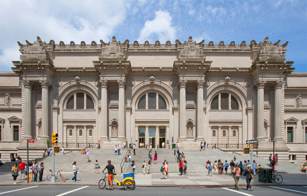
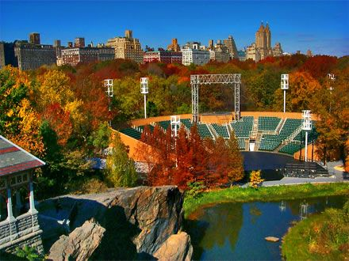
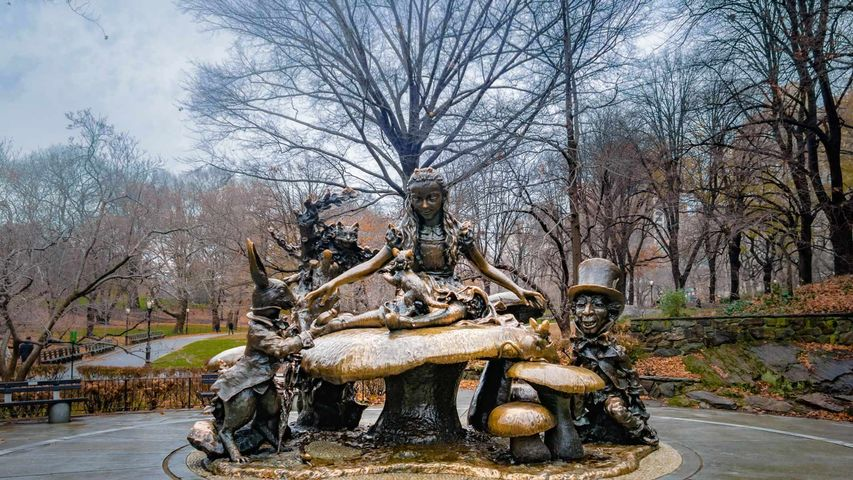

<!DOCTYPE html>
<html>
<head>
  <title>Central Park Webmap</title>
  <meta charset="utf-8" />
  <meta name="viewport" content="width=device-width, initial-scale=1.0">

  <link rel="stylesheet" href="https://unpkg.com/leaflet@1.5.1/dist/leaflet.css"
   integrity="sha512-xwE/Az9zrjBIphAcBb3F6JVqxf46+CDLwfLMHloNu6KEQCAWi6HcDUbeOfBIptF7tcCzusKFjFw2yuvEpDL9wQ=="
   crossorigin=""/>
  <script src="https://unpkg.com/leaflet@1.5.1/dist/leaflet.js"
   integrity="sha512-GffPMF3RvMeYyc1LWMHtK8EbPv0iNZ8/oTtHPx9/cc2ILxQ+u905qIwdpULaqDkyBKgOaB57QTMg7ztg8Jm2Og=="
   crossorigin=""></script>
  <style type="text/css">
    body {
       margin: 0;
       padding: 0;
    }
    html, body, #map{
       width: 100%;
       height: 100%;
    }
  </style>

  <script src = "./data/metropolitan_museum_art.geojson"></script>
  <script src = "./data/delacorte_theater.geojson"></script>
  <script src = "./data/alice_wonderland_sculpture.geojson"></script>
</head>
<body>
  <div id="map"></div>
  <script>
      var map = L.map('map').setView([40.78319726318241, -73.9529235042479], 14.0);

      var museumIcon = L.icon({
            iconUrl: './data/museum_icon.png',
            iconSize: [50, 50],
            popupAnchor: [0,0]
        })

        var museumPopup = "The Metropolitan Museum of Art: Compared to the 1954 image, Esri World Imagery shows that the museum building has undergone a lot of additions during the past 70 odd years, including the Grace Rainey Rogers Auditorium, which was built in 1954, the Sackler Wing, which is home to an ancient Egyptian temple, and Met Breuer, which houses contemporary art.<br/>";

        var museumMark = L.geoJSON(metMuseum, { // a
        pointToLayer: function (feature, latlng) { // 
        return L.marker(latlng, {icon: museumIcon});}}) // c 
        .bindPopup(museumPopup, {
          maxWidth: "auto"}); //
        
        var theaterIcon = L.icon({
            iconUrl: './data/theater_icon.png',
            iconSize: [50, 50],
            popupAnchor: [0,0]
        })

        var theaterPopup = "The Delacorte Theater: This theater was added to the park in 1962, which is why it can't be seen in the 1954 image. It is famous for staging Shakespeare's plays during the Shakespeare in the Park event.<br/>";

        var theaterMark = L.geoJSON(delaTheat, { // a
        pointToLayer: function (feature, latlng) { // 
        return L.marker(latlng, {icon: theaterIcon});}}) // c 
        .bindPopup(theaterPopup, {
            maxWidth: "auto"}); //

        var sculptIcon = L.icon({
            iconUrl: './data/sculpture_icon.png',
            iconSize: [50, 50],
            popupAnchor: [0,0]
        })

        var sculptPopup = "Alice in Wonderland: Constructed by José de Creeft, this sculpture features Alice, the White Rabbit, the Mad Hatter, the Cheshire Cat, and other characters from Alice's adventures in Wonderland. Since this whimsical sculpture was completed in 1959, it cannot be found in the 1954 image of Central Park.<br/>";

        var sculptMark = L.geoJSON(aliceWonder, { // a
        pointToLayer: function (feature, latlng) { // 
        return L.marker(latlng, {icon: sculptIcon});}}) // c 
        .bindPopup(sculptPopup, {
            maxWidth: "auto"}); //

      var EsriWI = L.tileLayer('https://server.arcgisonline.com/ArcGIS/rest/services/World_Imagery/MapServer/tile/{z}/{y}/{x}', {
	      attribution: 'Tiles &copy; Esri &mdash; Source: Esri, i-cubed, USDA, USGS, AEX, GeoEye, Getmapping, Aerogrid, IGN, IGP, UPR-EGP, and the GIS User Community'
      }).addTo(map);

      var cpTile = L.tileLayer('../undistorted_centPark_tiles/Tiles/{z}/{x}/{y}.png', {
        minZoom: 12,
        maxZoom: 16,
        tms: false,
        attribution: 'USGS'
      });

      var daTiles = {
        "Central Park Esri World Imagery": EsriWI,
        "Central Park 1954": cpTile
      }

      var daVectors = {
        "The Metropolitan Museum of Art": museumMark,
        "The Delacorte Theater": theaterMark,
        "Alice in Wonderland": sculptMark
      }

      L.control.layers(daTiles, daVectors).addTo(map);
  </script>
</body>
</html>
